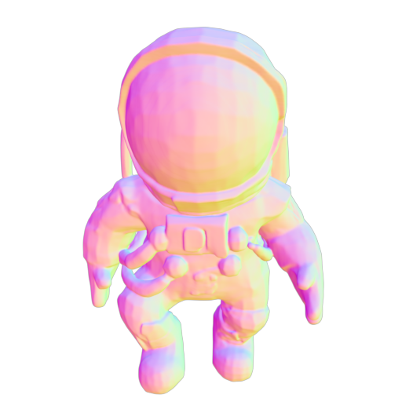
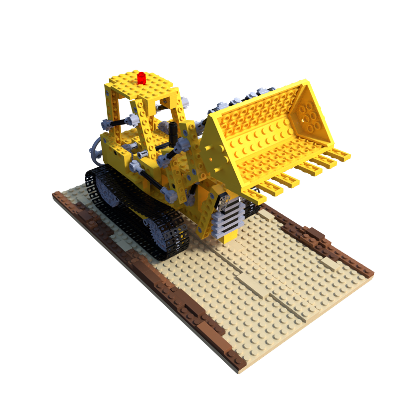

Jiraphon Yenphraphai (Dome)
จิรพนธ์ เย็นพระพาย (โดม)
Hello, I'm a PhD student at Purdue University where I am advised by Raymond A. Yeh . My research focuses on the intersection of computer vision and graphics.
I am currently a research intern on the Creative Vision at Snapchat, where I work with Chaoyang Wang , Peter Wonka , and Ashkan Mirzaei .
Previously, I received my Master's degree from NYU Courant, under the supervision of Saining Xie . Earlier in my career, I was fortunate to be advised by Supasorn Suwajanakorn , with a focus on view synthesis.
My undergraduate studies were completed at Chulalongkorn University in Bangkok, Thailand.
Email /
Scholar /
Github
Research
I am interested in 3D&4D reconstruction. My past projects have centered around AI that creates images and inverse rendering to make things look real.
(* means equal contribution)
Your browser does not support the video tag.

ShapeGen4D: Towards High Quality 4D Shape Generation from Videos
Jiraphon Yenphraphai ,
Ashkan Mirzaei ,
Jianqi Chen ,
Jiaxu Zou ,
Sergey Tulyakov ,
Raymond A. Yeh ,
Peter Wonka ,
Chaoyang Wang
project page
/
arXiv
We introduce a native video-to-4D shape framework that synthesizes a single dynamic 3D representation end-to-end from the video.
Your browser does not support the video tag.
Image Sculpting: Precise Object Editing with 3D Geometry Control
Jiraphon Yenphraphai ,
Xichen Pan ,
Sainan Liu ,
Daniele Panozzo ,
Saining Xie
CVPR, 2024
project page
/
arXiv
/
video
/
code
A framework allows for detailed and realistic 3D editing from a single image, including precise pose editing, rotation, and more.
Your browser does not support the video tag.
NeX: Real-time View Synthesis with Neural Basis Expansion
Suttisak Wizadwongsa* ,
Pakkapon Phongthawee* ,
Jiraphon Yenphraphai* ,
Supasorn Suwajanakorn
CVPR, 2021 (Oral, Best paper candidate)
project page
/
arXiv
/
video
/
code
/
Two Minute Papers
The enhancements of multiplane image (MPI) that can reproduce NeXt-level view-dependent effects in real time.
Your browser does not support the video tag.

NeX360: Real-time All-around View Synthesis with Neural Basis Expansion
Pakkapon Phongthawee* ,
Suttisak Wizadwongsa* ,
Jiraphon Yenphraphai ,
Supasorn Suwajanakorn
TPAMI, 2022
project page
/
arXiv
We develop multiple MPIs for unbounded 360° scenes.
Big thank you to Jon Barron for the source code of this website.
{kind=link}